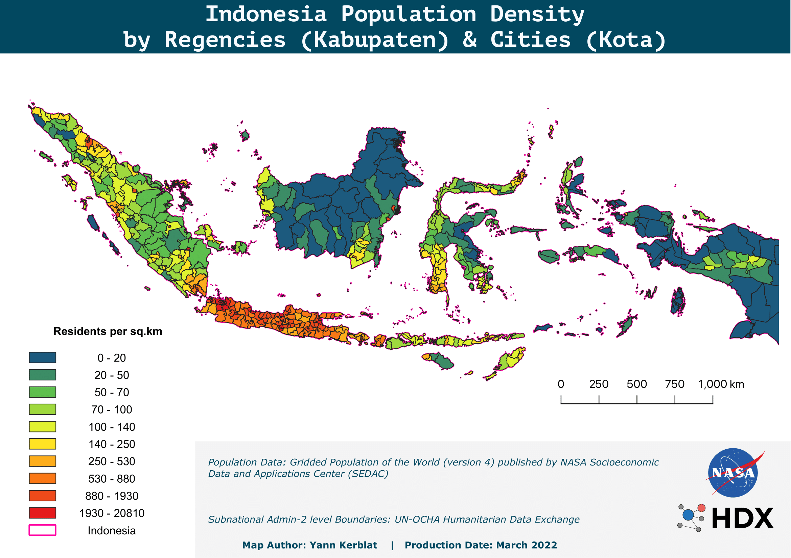
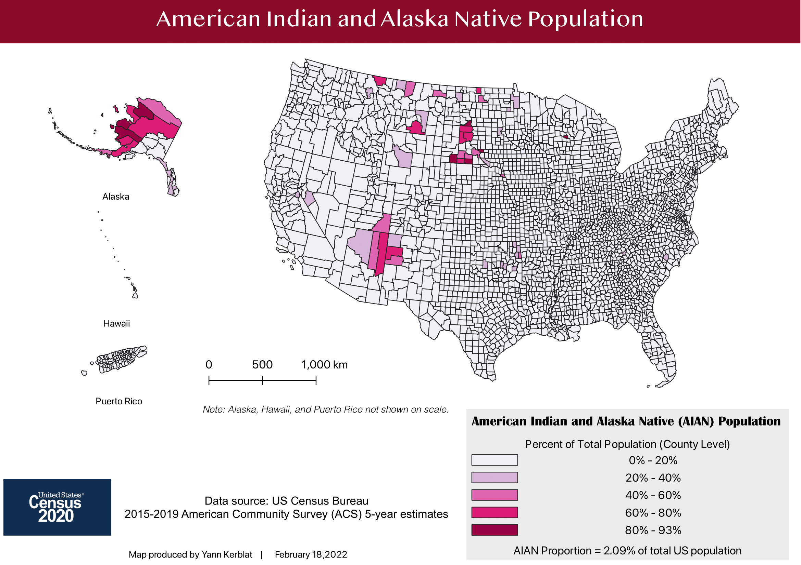
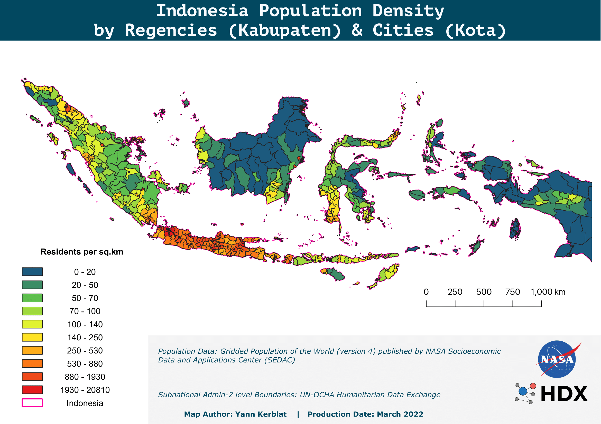
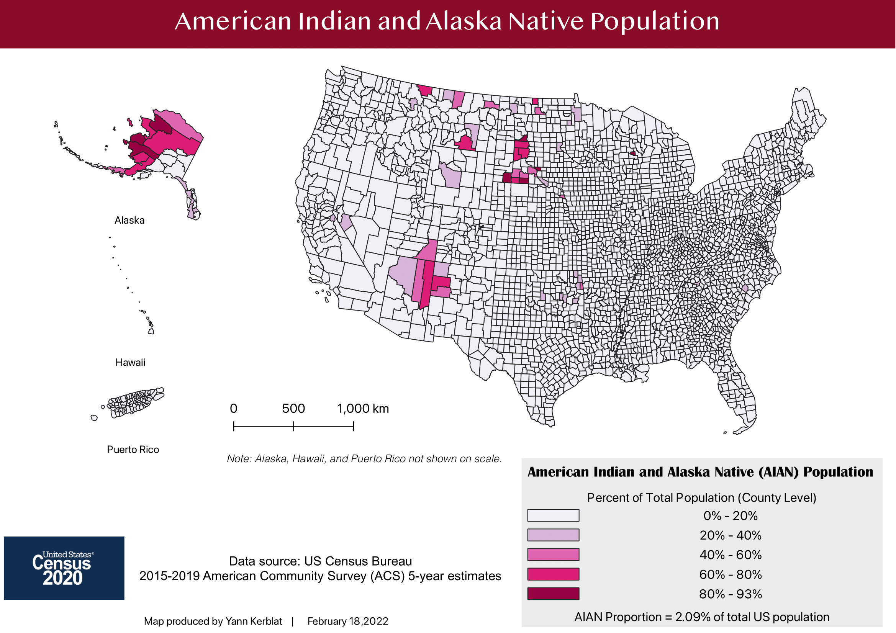

Geographic Information Systems (GIS) - Part I
A working knowledge of Geographic Information Systems (GIS) and related cartographic strategies is increasingly essential for addressing complex, “glocal” issues such as measuring the intensity of the 2022 US heatwave, measuring how far you can travel by train under 5 hours in Europe, locating supply chain disruptions, or accelerating humanitarian response activities in remote, low-access data-scarce locations.
This selection of thematic maps displayed below were put together using QGIS and display different types of use cases, techniques and applications.
 



Thematic Mapping & Cartographic Design
The cartographic, data management and spatial analysis skills that are listed below are also used in the fields of international development, urban planning and environmental management skills.
GIS components & methodologies include:
- Applying cartographic conventions for effective public dissemination
- Supplementing main maps with contextual information (inset maps, scale bars, labels, orientation, etc.)
- Multiscale mapping methodologies through map projections/reprojections & zonal statistics
- Choropleth maps by using aerial units and population normalization (i.e. mapping census data
- Geoprocessing & spatial analysis (i.e. measuring key features: overlay, proximity, buffer)
- Mapping vulnerability-exposure, vulnerability, and risk modeling for decision support
- Crisis mapping, participatory GIS, crowdsourcing and Volunteered Geographic Information (VGI)
Tools & Datasets
- QGIS
- OpenStreetMap (OSM)
- Data inputs annotated on each map